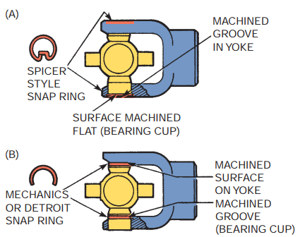
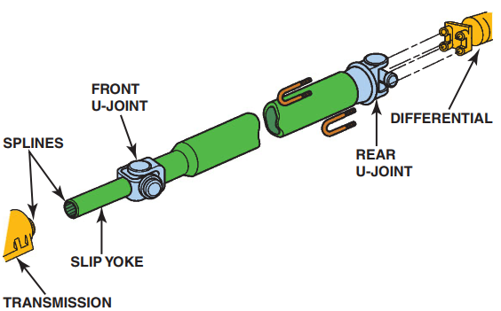
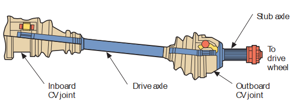
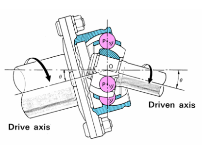
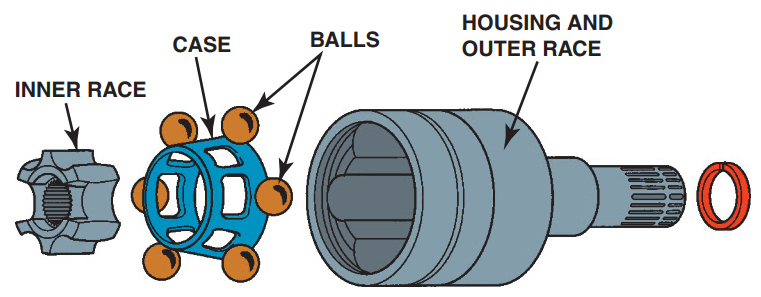
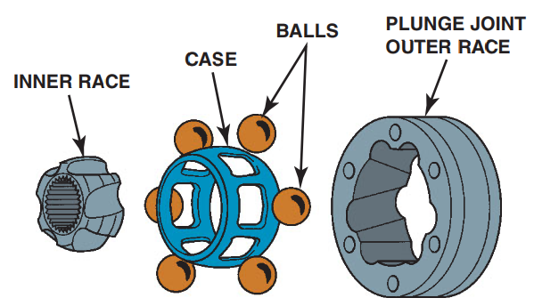
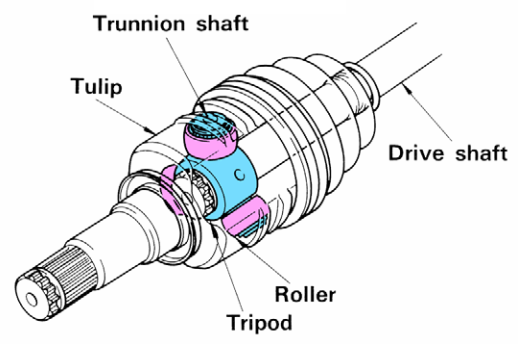

The transmission is normally fixed to the vehicle chassis by flexible rubber mountings. The rear differential and rear axle are usually supported by the rear suspension. Therefore suspension travel, due to vehicle loading and bumps in the road, causes the rear axle and differential to change position in relation to the transmission. The propeller shaft must therefore be designed to constantly change length and transmit power through a variety of angles.
There are three common designs of U-joints: single U-joints retained by either an inside or outside snap-ring, coupled U-joints, and U-joints held in the yoke by U-bolts or lock plates.
Single Universal Joints

Figure 8.3. (A) A Spicer-style and (B) a Mechanics or Detroit-style U-joint
The single Cardan/Spicer U-joint is also known as the cross or four-point joint. These two names aptly describe the single Cardan, since the joint itself forms a cross, with four machined trunnions or points equally spaced around the center of the axis. Needle bearings used to abate friction and provide smoother operation are set in bearing cups. The trunnions of the cross fit into the cup assemblies and the cup assemblies fit snugly into the driving and driven U-joint yokes. U-joint movement takes place between the trunnions, needle bearings, and bearing cups.
Double-Cardan Universal Joint

Figure 8.4. A double-Cardan joint
A double-Cardan U-joint is used with split drive shafts and consists of two Cardan U-joints closely connected by a centering ball socket and a center yoke, which functions as a ball and socket. The ball and socket splits the angle of the two shafts between two U-joints (Figure 8.4). Because of the centering socket yoke, the total operating angle is divided equally between the two joints. Since the two joints operate at the same angle, the normal fluctuations that result from the use of a single U-joint are canceled out. The acceleration and deceleration of one joint is canceled by the equal and opposite action of the other.
The double-Cardan joint is classified as a CV U-joint. It is most often found in front-engine RWD luxury-type vehicles.
TYPES OF CV JOINTS
CV joints come in a variety of styles. The different types of joints can be referred to by position (inboard or outboard), by function (fixed or plunge), or by design (ball-type or tripod).
Inboard and Outboard Joints

Figure 8.5. A typical FWD drive axle assembly
On FWD vehicles, two CV joints are used on each half shaft (Figure 8.5). The joint nearer the transaxle is the inner or inboard joint, and the one nearer the wheel is the outer or outboard joint. In a RWD vehicle with independent rear suspension, the joint nearer the differential can also be referred to as the inboard joint. The one closer to the wheel is the outboard joint.
Fixed Ball-Type CV Joints
The Rzeppa joint, or fixed ball-type joint, consists of an inner ball race, six balls, a cage to position the balls, and an outer housing (Figure 8.6). Tracks machined in the inner race and outer housing allow the joint to flex. The inner race and outer housing form a ball-and-socket arrangement. The six balls serve both as bearings between the races and the means of transferring torque from one to the other.

Figure 8.6. A Rzeppa ball-type fixed CV joint
Plunging Ball-Type Joints.
There are two basic styles of plunging ball-type joints: the double-offset and the cross-groove joints. This is a more compact design with a flat, doughnut-shaped outer housing and angled grooves.

Figure 8.7. A double-offset CV joint
The double-offset joint (Figure 8.7) uses a cylindrical outer housing with straight grooves and is typically used in applications that require higher operating angles (up to 25 degrees) and greater plunge depth (up to 2.4 inches [60 mm]). This type of joint can be found at the inboard position on some FWD half shafts as well as on the propeller shaft of some FWD shafts.

Figure 8.8. A cross-groove joint
The cross-groove joint (Figure 8.8) has a much flatter design than any other plunge joint. It is used as the inboard joint on FWD half shafts or at either end of a RWD independent rear suspension axle shaft.
Tripod Plunging Joints

Figure 8.9. Inner tripod plunge-type joints: closed housing and open housing.
Tripod plunging joints (Figure 8.9) consist of a central drive part or tripod (also known as a “spider”). This has three trunnions fitted with spherical rollers on needle bearings and an outer housing (sometimes called a “tulip” because of its three-lobed, flowerlike appearance). On some tripod joints, the outer housing is closed, meaning the roller tracks are totally enclosed within it. On others, the tulip is open and the roller tracks are machined out of the housing. Tripod joints are most commonly used as FWD inboard plunge joints.